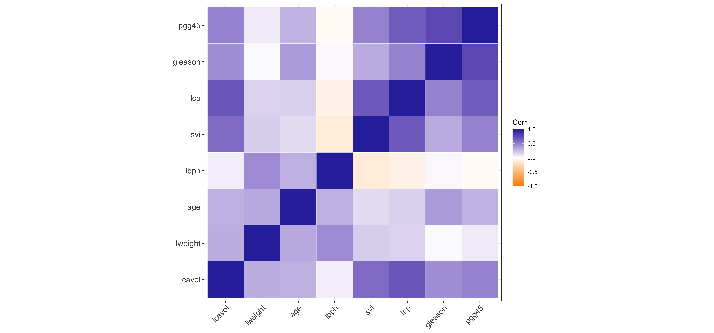
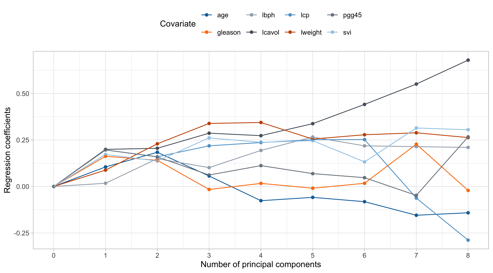

Rows: 97
Columns: 10
$ lcavol <dbl> -0.5798185, -0.9942523, -0.5108256, -1.2039728, 0.7514161, -1.…
$ lweight <dbl> 2.769459, 3.319626, 2.691243, 3.282789, 3.432373, 3.228826, 3.…
$ age <int> 50, 58, 74, 58, 62, 50, 64, 58, 47, 63, 65, 63, 63, 67, 57, 66…
$ lbph <dbl> -1.3862944, -1.3862944, -1.3862944, -1.3862944, -1.3862944, -1…
$ svi <int> 0, 0, 0, 0, 0, 0, 0, 0, 0, 0, 0, 0, 0, 0, 0, 0, 0, 0, 0, 0, 0,…
$ lcp <dbl> -1.3862944, -1.3862944, -1.3862944, -1.3862944, -1.3862944, -1…
$ gleason <int> 6, 6, 7, 6, 6, 6, 6, 6, 6, 6, 6, 6, 7, 7, 7, 6, 7, 6, 6, 6, 6,…
$ pgg45 <int> 0, 0, 20, 0, 0, 0, 0, 0, 0, 0, 0, 0, 30, 5, 5, 0, 30, 0, 0, 0,…
$ lpsa <dbl> -0.4307829, -0.1625189, -0.1625189, -0.1625189, 0.3715636, 0.7…
$ train <lgl> TRUE, TRUE, TRUE, TRUE, TRUE, TRUE, FALSE, TRUE, FALSE, FALSE,…Shrinkage and variable selection
Data Mining - CdL CLAMSES
Tommaso Rigon
Università degli Studi di Milano-Bicocca
Homepage

In this unit we will cover the following topics:
- Best subset regression
- Principal component regression
- Ridge regression
- Lasso, LARS, elastic-net
The common themes are called variable selection and shrinkage estimation.
The issue we face is the presence of a high number p of covariates that are potentially irrelevant.
This problem is quite challenging when the ratio p / n is large.
In the extreme case p > n, is there any hope to fit a meaningful model?
The prostate dataset
- The
prostatecancer data investigates the relationship between the prostate-specific antigen and a number of clinical measures, in men about to receive a prostatectomy.
- This dataset has been used in the original paper by Tibshirani (1996) to present the lasso. A description is given in Section 3.2.1 of HTF (2009).
We want to predict the logarithm of a prostate-specific antigen (
lpsa) as a function of:- logarithm of the cancer volume (
lcavol); - logarithm of the prostate weight (
lweight); - age each man (
age); - logarithm of the benign prostatic hyperplasia amount (
lbph); - seminal vesicle invasion (
svi), a binary variable; - logarithm of the capsular penetration (
lcp); - Gleason score (
gleason), an ordered categorical variable; - Percentage of Gleason scores 4 and 5 (
pgg45).
- logarithm of the cancer volume (
A glimpse of the prostate dataset
Summarizing, there are in total 8 variables that can be used to predict the antigen
lpsa.We centered and standardized all the covariates before the training/test split.
There are n = 67 observations in the training set and 30 in the test set.
Rows: 97
Columns: 10
$ lcavol <dbl> -1.63735563, -1.98898046, -1.57881888, -2.16691708, -0.5078744…
$ lweight <dbl> -2.00621178, -0.72200876, -2.18878403, -0.80799390, -0.4588340…
$ age <dbl> -1.86242597, -0.78789619, 1.36116337, -0.78789619, -0.25063130…
$ lbph <dbl> -1.0247058, -1.0247058, -1.0247058, -1.0247058, -1.0247058, -1…
$ svi <dbl> -0.5229409, -0.5229409, -0.5229409, -0.5229409, -0.5229409, -0…
$ lcp <dbl> -0.8631712, -0.8631712, -0.8631712, -0.8631712, -0.8631712, -0…
$ gleason <dbl> -1.0421573, -1.0421573, 0.3426271, -1.0421573, -1.0421573, -1.…
$ pgg45 <dbl> -0.8644665, -0.8644665, -0.1553481, -0.8644665, -0.8644665, -0…
$ lpsa <dbl> -0.4307829, -0.1625189, -0.1625189, -0.1625189, 0.3715636, 0.7…
$ train <lgl> TRUE, TRUE, TRUE, TRUE, TRUE, TRUE, FALSE, TRUE, FALSE, FALSE,…Correlation matrix of prostate
The variable selection problem
- We consider a linear model in which the relationship between the response variable Y_i (
lpsa) and the covariates is modelled through the function f(\bm{x}_i; \beta_0, \beta) = \beta_0+ \beta_1 x_{i1} + \cdots + \beta_p x_{ip} =\beta_0 + \bm{x}_i^T\beta. In this unit the intercept \beta_0 will play a special role, therefore we use this slightly different notation compared to Unit A.
Including a lot of covariates into the model is not necessarily a good thing!
Indeed, some variables are likely to be irrelevant:
- they might be correlated with other covariates and therefore redundant;
- they could be uncorrelated with the response
lpsa.
If we use all the p = 8 available covariates, the estimated f(\bm{x}; \hat{\beta_0}, \hat{\beta}) might have a high variance, without important gain in term of bias, i.e. a large mean squared error.
We are looking for a simpler model having, hopefully, a lower mean squared error.
A naïve approach: (ab)using p-values
| (Intercept) | lcavol | lweight | age | lbph | svi | lcp | gleason | pgg45 | |
|---|---|---|---|---|---|---|---|---|---|
| estimate | 2.46 | 0.68 | 0.26 | -0.14 | 0.21 | 0.31 | -0.29 | -0.02 | 0.27 |
| std.error | 0.09 | 0.13 | 0.10 | 0.10 | 0.10 | 0.12 | 0.15 | 0.15 | 0.15 |
| statistic | 27.60 | 5.37 | 2.75 | -1.40 | 2.06 | 2.47 | -1.87 | -0.15 | 1.74 |
| p.value | 0.00 | 0.00 | 0.01 | 0.17 | 0.04 | 0.02 | 0.07 | 0.88 | 0.09 |
It is common practice to use the p-values, e.g. those obtained through the
summaryfunction, to perform model selection in a stepwise fashion.This is not a good idea, at least when done without appropriate multiplicity corrections.
The above p-values are meant to be used in the context of a single hypothesis testing problem, not to make iterative choices.
To explain or to predict?
- “All models are approximations. Essentially, all models are wrong, but some are useful.” George E. P. Box
If the focus is on prediction, we do not necessarily care about selecting the “true” set of parameters.
In many data mining problems, the focus is on minimizing the prediction errors.
- Hence, often times we may accept some bias (i.e. we use a “wrong” but useful model), if this leads to a reduction in variance.
Besides, in certain cases it does not even make much sense to speak about the “true parameters”.
For example, what if the true f(\bm{x}) were not linear? In this context, a linear model is simply an approximation of the unknown f(\bm{x}) and hypothesis testing procedures are ill-posed.
Best subset selection
Let us get back to our variable selection problem.
In principle, we could perform an exhaustive search considering all the 2^p possible models and then selecting the one having the best out-of-sample predictive performance.
Best subset procedure
Let \mathcal{M}_0 be the null model, which contains no predictors, i.e. set \hat{y}_i = \hat{\beta}_0 = \bar{y}.
For k =1,\dots,p, do:
Estimate all the \binom{p}{k} models that contain exactly k covariates;
Identify the “best” model with k covariates having the smallest \text{MSE}_{k, \text{train}}; call it \mathcal{M}_k.
- A model with more variables has lower training error, namely \text{MSE}_{k + 1, \text{train}} \le \text{MSE}_{k, \text{train}} by construction. Hence, the optimal subset size k must be chosen e.g. via cross-validation.
Step 1. and 2. of best subset selection

The “best” models \mathcal{M}_1,\dots, \mathcal{M}_p
- The output of the best subset selection, on the training set is:
lcavol lweight age lbph svi lcp gleason pgg45
1 ( 1 ) "*" " " " " " " " " " " " " " "
2 ( 1 ) "*" "*" " " " " " " " " " " " "
3 ( 1 ) "*" "*" " " " " "*" " " " " " "
4 ( 1 ) "*" "*" " " "*" "*" " " " " " "
5 ( 1 ) "*" "*" " " "*" "*" " " " " "*"
6 ( 1 ) "*" "*" " " "*" "*" "*" " " "*"
7 ( 1 ) "*" "*" "*" "*" "*" "*" " " "*"
8 ( 1 ) "*" "*" "*" "*" "*" "*" "*" "*" The above table means that the best model with k = 1 uses the variable
lcavol, whereas when k = 2 the selected variables arelcavolandlweight, and so on and so forth.Note that, in general, these models are not necessarily nested, i.e. a variable selected at step k is not necessarily included at step k +1. Here they are, but it is a coincidence.
- What is the optimal subset size k in terms on out-of-sample mean squared error?
The wrong way of doing cross-validation
Consider a regression problem with a large number of predictors (relative to n) such as the
prostatedataset.A typical strategy for analysis might be as follows:
Screen the predictors: find a subset of “good” predictors that show fairly strong correlation with the response;
Using this subset of predictors (e.g.
lcavol,lweightandsvi), build a regression model;Use cross-validation to estimate the prediction error of the model of the step 2.
Is this a correct application of cross-validation?
If your reaction was “this is absolutely wrong!”, it means you correctly understood the principles of cross-validation.
If you though this was an ok-ish idea, you may want to read Section 7.10.2 of HTF (2009), called “the wrong way of doing cross-validation”.
Step 3. of best subset selection via cross-validation

- By applying the “1 standard error rule”, we select k = 2, i.e.
lcavolandlweight.
Forward regression
- Forward regression is greedy approximation of best subset selection, that produces a sequence of nested models. It is computationally feasible and can be applied when p > n.
Forward regression
Let \mathcal{M}_0 be the null model, which contains no predictors, i.e. set \hat{y}_i = \hat{\beta}_0 = \bar{y}.
For k = 0,\dots, \min(n - 1, p - 1), do:
Consider the p − k models that augment the predictors in \mathcal{M}_k with one additional covariate.
Identify the “best” model among the above p - k competitors having the smallest \text{MSE}_{k, \text{train}} and call it \mathcal{M}_k.
- It can be shown that the identification of the optimal new predictor can be efficiently computed using the QR decomposition (see Exercises).
Backward regression
- When p < n, an alternative greedy approach is backward regression, which also produces a sequence of nested models.
Backward regression
Let \mathcal{M}_p be the full model, which contains all the predictors.
For k = p, p - 1,\dots, 1, do:
Consider the k models that contain all but one of the predictors in \mathcal{M}_k, for a total of k − 1 predictors.
Identify the “best” model \mathcal{M}_k among these k models having the smallest \text{MSE}_{k, \text{train}}.
- It can be shown that the dropped predictor is the one with the lowest absolute Z-score or, equivalently, the highest p-value (see Exercises).
Forward, backward and best subset

- In the
prostatedataset, forward, backward and best subset selection all gave exactly the same path of solutions on the full training set.
Extension to generalized linear models
Principal components regression
Data compression

At this point we established that many covariates = many problems.
Instead of selecting the “best” variables, let us consider a different perspective.
We consider a compressed version of the covariates that has smaller dimension k but retains most information.
Intuitively, we want to reduce the variance by finding a good compression, without sacrificing too much bias.
The main statistical tool, unsurprisingly, will be the celebrated principal components analysis (PCA).
You should already know PCA as a tool for explorative analysis… We will focus on its usage for regression purposes.
Centering the predictors I
Let us consider a reparametrization of the linear model using centered predictors \begin{aligned} f(\bm{x}_i; \alpha, \beta) & = \alpha + \beta_1 (x_{i1} - \bar{x}_1) + \cdots + \beta_p (x_{ip} - \bar{x}_{ip}) = \alpha + (\bm{x}_i -\bar{\bm{x}})^T\beta \\ & = \alpha - \bar{\bm{x}}^T\beta + \bm{x}_i^T\beta = \beta_0 + \bm{x}_i^T\beta, \quad \text{where} \quad \beta_0 = \alpha - \bar{\bm{x}}^T\beta. \end{aligned}
In this reparametrization the centered predictors are orthogonal to the intercept. Thus, the estimates for (\alpha, \beta) can be computed in two steps.
The estimate of the intercept with centered predictors is \hat{\alpha} = \bar{y}. In fact: \hat{\alpha} = \arg\min_{\alpha \in \mathbb{R}}\sum_{i=1}^n\{y_i - \alpha - (\bm{x}_i -\bar{\bm{x}})^T\beta\}^2 = \frac{1}{n}\sum_{i=1}^n\{y_i - (\bm{x}_i -\bar{\bm{x}})^T\beta\} = \frac{1}{n}\sum_{i=1}^ny_i.
Then, the estimate of \beta can be obtained considering a linear model without intercept: f(\bm{x}_i; \beta) = (\bm{x}_i -\bar{\bm{x}})^T\beta, used to predict the centered responses y_i - \bar{y}.
Centering the predictors II
From here on, and without loss of generality, we assume that everything is centered: \sum_{i=1}^ny_i = 0, \qquad \sum_{i=1}^nx_{ij} = 0, \qquad j=1,\dots,p.
Hence, because of the previous results, we can focus on linear models without intercept: f(\bm{x}_i; \beta) = x_{i1}\beta_1 + \cdots + x_{ip}\beta_p = \bm{x}_i^T\beta.
Under such an assumption the covariance matrix of the data is simply S = \frac{1}{n} \bm{X}^T\bm{X}.
If in addition each variable has been scaled by their standard deviations, then n^{-1} \bm{X}^T\bm{X} corresponds to the correlation matrix.
Singular value decomposition (SVD)
Let \bm{X} be a n \times p matrix. Then, its full form singular value decomposition is: \bm{X} = \bm{U} \bm{D} \bm{V}^T = \sum_{j=1}^m d_j \tilde{\bm{u}}_j \tilde{\bm{v}}_j^T, with m =\min\{n, p\} and where:
- the n \times n matrix \bm{U} = (\tilde{\bm{u}}_1, \dots, \tilde{\bm{u}}_n) is orthogonal, namely: \bm{U}^T \bm{U} = \bm{U}\bm{U}^T= I_n;
- the p \times p matrix \bm{V} = (\tilde{\bm{v}}_1,\dots,\tilde{\bm{v}}_p) is orthogonal, namely: \bm{V}^T \bm{V} = \bm{V}\bm{V}^T= I_p;
- the n \times p matrix \bm{D} has diagonal entries [\bm{D}]_{jj} = d_j, for j=1,\dots,m, and zero entries elsewhere;
The real numbers d_1 \ge d_2 \ge \cdots \ge d_m \ge 0 are called singular values.
If one or more d_j = 0, then the matrix \bm{X} is singular.
Principal component analysis I
Le us assume that p < n and that \text{rk}(\bm{X}) = p, recalling that \bm{X} is a centered matrix.
Using SVD, the matrix \bm{X}^T\bm{X} can be expressed as \bm{X}^T\bm{X} = (\bm{U} \bm{D} \bm{V}^T)^T \bm{U} \bm{D} \bm{V}^T = \bm{V} \bm{D}^T \textcolor{red}{\bm{U}^T \bm{U}} \bm{D} \bm{V}^T = \bm{V} \bm{\Delta}^2 \bm{V}, where \bm{\Delta}^2 = \bm{D}^T\bm{D} is a p \times p diagonal matrix with entries d_1^2,\dots,d_p^2.
This equation is at the heart of principal component analysis (PCA). Define the matrix \bm{Z} = \bm{X}\bm{V} = \bm{U}\bm{D}, whose columns \tilde{\bm{z}}_1,\dots,\tilde{\bm{z}}_p are called principal components.
The matrix \bm{Z} is orthogonal, because \bm{Z}^T\bm{Z} = \bm{D}^T\textcolor{red}{\bm{U}^T \bm{U}} \bm{D} = \bm{\Delta}^2, which is diagonal.
Moreover, by definition the entries of \bm{Z} are linear combination of the original variables: z_{ij} = x_{i1}v_{i1} + \cdots + x_{ip} v_{ip} = \bm{x}_i^T\tilde{\bm{v}}_j. The columns \tilde{\bm{v}}_1,\dots,\tilde{\bm{v}}_p of \bm{V} are sometimes called loadings.
Principal component analysis II
Principal components form an orthogonal basis of \bm{X}, but they are not a “random” choice and they do not coincide with them Gram-Schmidt basis of Unit A.
Indeed, the first principal component is the linear combination having maximal variance: \tilde{\bm{v}}_1 = \arg\max_{\bm{v} \in \mathbb{R}^p} \text{var}(\bm{X}\bm{v})= \arg\max_{\bm{v} \in \mathbb{R}^p} \frac{1}{n} \bm{v}^T\bm{X}^T\bm{X} \bm{v}, \quad \text{ subject to } \quad \bm{v}^T \bm{v} = 1.
The second principal component maximizes the variance under the additional constraint of being orthogonal to the former. And so on and so forth.
The values d_1^2 \ge d_2^2 \ge \dots \ge d_p^2 > 0 are the eigenvalues of \bm{X}^T\bm{X} and correspond to the rescaled variances of each principal component, that is \text{var}(\tilde{\bm{z}}_j) = \tilde{\bm{z}}_j^T \tilde{\bm{z}}_j/n = d^2_j / n.
Hence, the quantity d_j^2 / \sum_{j'=1}^p d_{j'}^2 measures the amount of total variance captured by principal components.
Principal component analysis: prostate data

Principal components regression (PCR)
We use the first k \le p principal components to predict the responses Y_i via f(\bm{z}_i; \gamma) = \gamma_1 z_{i1} + \cdots + \gamma_kz_{ik}, \qquad i=1,\dots,n,
Because of orthogonality, the least squares solution is straightforward to compute: \hat{\gamma}_j = \frac{\tilde{\bm{z}}_j^T\bm{y}}{\tilde{\bm{z}}_j^T\tilde{\bm{z}}_j} = \frac{1}{d_j^2}\tilde{\bm{z}}_j^T\bm{y}, \qquad j=1,\dots,k.
The principal components are in order of importance and effectively compressing the information contained in \bm{X} using only k \le p variables.
When k = p we are simply rotating the original matrix \bm{X} = \bm{Z}\bm{V}, i.e. performing no compression. The predicted values coincide with OLS.
The number k is a complexity parameter which should be chosen via information criteria or cross-validation.
Selection of k: cross-validation

Shrinkage effect of principal components I
A closer look to the PCR solution reveals some interesting aspects. Recall that: \tilde{\bm{z}}_j = \bm{X}\tilde{\bm{v}}_j = d_j \tilde{\bm{u}}_j, \qquad j=1,\dots,p.
The predicted values \hat{\bm{y}} = (\hat{y}_1,\dots,\hat{y}_n) of the PCR with k components are: \hat{\bm{y}} = \sum_{j=1}^k \tilde{\bm{z}}_j \hat{\gamma}_j = \bm{X} \sum_{j=1}^k \tilde{\bm{v}}_j \hat{\gamma}_j = \bm{X}\hat{\beta}_\text{pcr}, \quad \text{ where } \quad \hat{\beta}_\text{pcr} = \sum_{j=1}^k \tilde{\bm{v}}_j \hat{\gamma}_j.
This representation highlights two important aspects:
- It is possible to express the PCR solution in the original scale, for better interpretability;
- The vector \hat{\beta}_\text{pcr} is a constrained solution, being a combination of k \le p coefficients, therefore reducing the complexity of the model and shrinking the coefficients.
When k = 1, then the \hat{\beta}_\text{pcr} estimate coincide with the scaled loading vector \hat{\beta}_\text{pcr} = \hat{\gamma}_1 \tilde{\bm{v}}_1;
When k = p then the \hat{\beta}_\text{pcr} coincides with ordinary least squares (see Exercises).
Shrinkage effect of principal components II
The variance of \hat{\beta}_\text{pcr}, assuming iid errors \epsilon_i and after some algebraic manipulation, results: \text{var}(\hat{\beta}_\text{pcr}) = \sigma^2\sum_{j=1}^k \frac{1}{d_j^2} \tilde{\bm{v}}_j\tilde{\bm{v}}_j^T.
Thus, if a multicollinearity exists, then it appears as a principal component with very small variance, i.e. a small d_j^2. Its removal therefore drastically reduces the variance of \hat{\beta}_\text{pcr}.
Furthermore, the predicted values can be expressed as \hat{\bm{y}} = \sum_{j=1}^k \tilde{\bm{z}}_j \hat{\gamma}_j = \sum_{j=1}^k \tilde{\bm{z}}_j \frac{\tilde{\bm{z}}_j^T\bm{y}}{\tilde{\bm{z}}_j^T\tilde{\bm{z}}_j} = \sum_{j=1}^k \textcolor{darkblue}{d_j} \tilde{\bm{u}}_j \frac{\textcolor{darkblue}{d_j}}{\textcolor{darkblue}{d_j^2}} \frac{\tilde{\bm{u}}_j^T\bm{y}}{\textcolor{red}{\tilde{\bm{u}}_j^T\tilde{\bm{u}}_j}} = \sum_{j=1}^k \tilde{\bm{u}}_j \tilde{\bm{u}}_j^T \bm{y}.
The columns of \bm{U}, namely the vectors \tilde{\bm{u}}_j are the normalized principal components.
Hence, we are shrinking the predictions towards the main principal directions.
Shrinkage effect of principal components III
Extension to generalized linear models
Summary and next steps
We have see so far two “discrete” methods: best subset selection and PCR
Best subset selection perform variable selection, whereas PCR reduces the variance of the coefficients.
| Shrinkage | Variable selection | |
|---|---|---|
| Discrete | Principal component regression | Best subset selection, stepwise |
| Continuous | Ridge regression | Relaxed Lasso |
Ridge regression
References

Comments and computations
The correct way of doing cross-validation requires that the best subset selection is performed on every fold, possibly obtaining different “best” models with the same size.
Best subset selection is conceptually appealing, but it has a major limitation. There are \sum_{k=1}^p \binom{n}{k} = 2^p models to consider, which is computationally prohibitive!
There exists algorithms (i.e. leaps and bounds) that makes this feasible for p \approx 30.
Recently, Bertsimas et al., 2016 proposed the usage of a mixed integer optimization formulation, allowing p to be in the order of hundreds.
Despite these advances, this problem remains computationally very expensive. See also the recent paper Hastie et al. (2020) for additional considerations and comparisons.